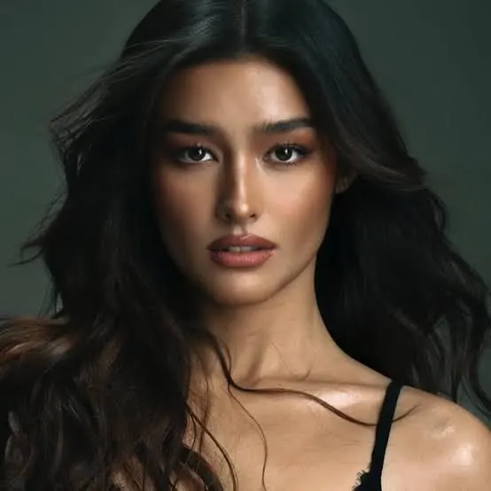

she carries a soft luminous beauty with an oval face and a gentle jawline that feels both delicate and composed her eyes are almond shaped and warm framed by long lashes and clean defined brows that give her gaze a quiet confidence a small straight nose and full natural lips add to her balanced graceful features and her smile reads as calm bright and sincere long dark hair falls in soft waves around her face parted at the center like a simple frame that makes her expression the focus her complexion is warm and smooth with a subtle blush that keeps her look fresh and light she feels elegant without effort classic yet modern a presence that is soft at first glance and strong on a second look the overall impression is gentle and radiant as if warmth follows her wherever she goes. her posture is upright yet relaxed suggesting a quiet confidence in every movement she makes the tilt of her head and the softness of her gaze convey openness and friendliness while maintaining an air of sophistication her hands, when visible, rest naturally, graceful and relaxed, reinforcing her calm presence her style is minimal yet refined, highlighting her features rather than distracting from them the color palette she wears harmonizes with her warm complexion and accentuates the softness of her features her presence feels alive yet serene, commanding attention without effort in every environment she enters, she blends subtlety with grace, leaving a lasting impression of quiet elegance and inner strength. she carries a soft luminous beauty with an oval face and a gentle jawline that feels both delicate and composed her eyes are almond shaped and warm framed by long lashes and clean defined brows that give her gaze a quiet confidence a small straight nose and full natural lips add to her balanced graceful features and her smile reads as calm bright and sincere long dark hair falls in soft waves around her face parted at the center like a simple frame that makes her expression the focus her complexion is warm and smooth with a subtle blush that keeps her look fresh and light she feels elegant without effort classic yet modern a presence that is soft at first glance and strong on a second look the overall impression is gentle and radiant as if warmth follows her wherever she goes. every glance, every gesture is deliberate yet natural, reflecting a personality that is self-assured without being imposing her laughter is quiet but infectious, leaving a sense of joy in the space she occupies her eyes, reflective and observant, capture the subtleties of her surroundings and the nuances of human expression she listens fully, giving her a sense of depth and empathy that draws people in her calm energy creates a safe space around her, where conversation flows and thoughts are welcomed she moves through her day with an ease that appears effortless, yet hints at the mindful care she takes in every choice, from posture to expression to attire.

Liza Soberano
{kind=link}